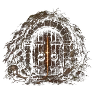
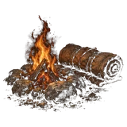
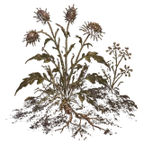

Expedition
Der Held zieht ohne Glut los. Wähle, wie.

Aufbrechen
1–8 Std., auch wenn die App zu ist
Weg planen, Ereignisse entscheiden
volle Beute

Umherziehen
Nur solange die App offen ist
Ein Punkt ≈ 2 Min., von selbst
halbe Beute · max. 2 Std.
Die bisherige Expedition bleibt unverändert. Umherziehen ist der neue Idle-Modus.

1:14
6 · Kampf: Grabräuber+18 EP · 9
5 · Ruine durchsuchtMagischer Ring
4 · GebeinfeldKnochenstaub ×1
3 · Kampf: Ghul+16 EP · 8
2 · KräuterfeldRotwurz ×1
1 · Rast am Feuer–
Unterwegs seit 12 Min. · noch 1:48 Std.
Jeder Punkt ≈ 2 Min. mit Timer und Balken: Kampf, Kräuterfeld, Gebeinfeld, Ruine, Rast. Beute je Punkt = 50 % einer Expeditions-Station. EP gibt es sofort, der Rest kommt beim Heimrufen. Ort = höchster geschaffter Akt.
Der Held wartet am Lagerfeuer
2 Std. umhergezogen – mehr trägt der Sack nicht.
Punkte geschafft60
Erfahrung+1.020 EP
Gold412
Fundstücke3 magische, 1 seltenes
ZutatenRotwurz ×4 · Grabmoos ×2
MaterialKnochenstaub ×5 · Ghulzahn ×3
Nach 2 Std. hört er auf. Grüner Punkt am Streifzug-Tab, wenn der Sack voll ist. Solange er umherzieht: keine Akte/Krypta/Grube (wie bei der Expedition).